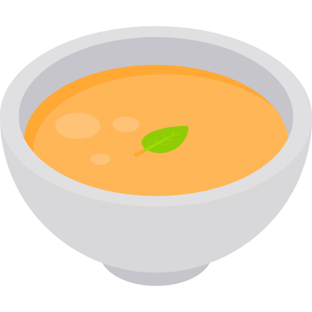

Ana Beca

Supe
Supă-cremă de dovleac
Supa-cremă de dovleac se numară printre acele preparate delicioase cărora nu le poți rezista niciodată. Iar partea bună este ca o poți pregăti foarte ușor la tine acasă.
Curăță dovleacul de coajă, taie-l în două și scoate-i miezul și semințele, păstrând doar pulpa făcută cubulețe. Amestecă-le pe acestea cu celelalte legume și lasă-le la fiert într-un vas cu apă până când cantitatea de lichid scade la jumătate. Apoi, strecoară legumele și pasează-le în blender alături de celelalte ingrediente. În funcție de cât de lichidă sau de densă iți doreșți să fie crema, poți adauga mai multe legume.
La final, adaugă sare, piper, ierburi aromatice, dar și câteva bucățele de caju: combinația este absolut delicioasă!
Poftă bună!